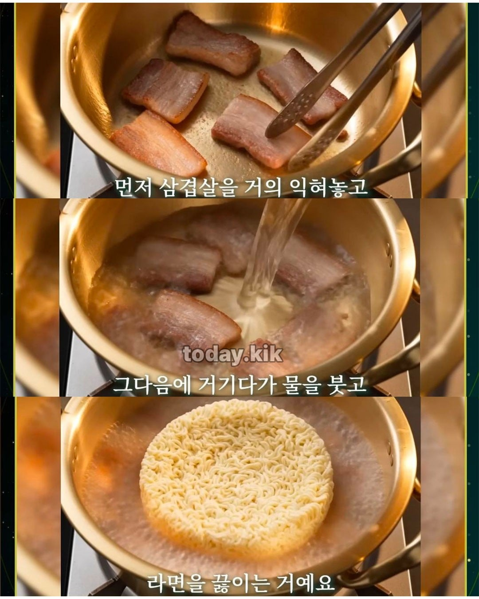
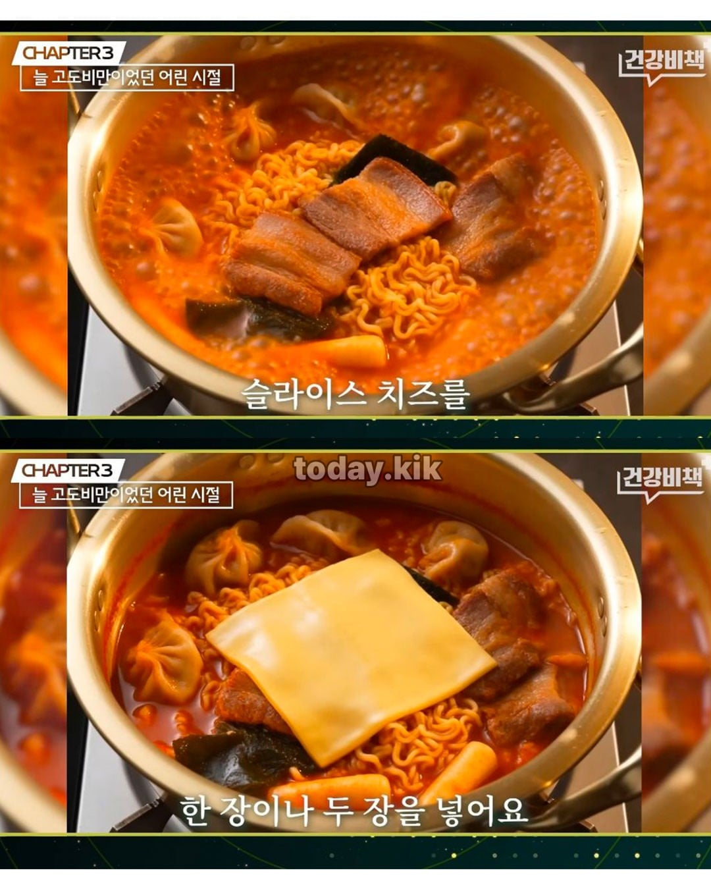

배우신분..


배우신분..
코하고 손가락 보면 살찌는 체질임.
먹고싶은건 많고 따로하긴 귀찮고
흑흑 거지라서 저렇게 못먹음
태생멸치인데 저런짓은 귀찮아서 못함 ㄹㅇ 정 배고프면 1키로미터쯤 떨어진 24시 편의점가서 삼각김밥 하나먹고 오지 ㄹㅇ
그러니까 니가 멸치인거야 좀더 분발해라
라면 레시피만 봐도 얼마나 부유한 집안이셨을지 감이 잡힌다 ㅋㅋㅋ
난 라면에 치즈를 왜 올리는지 잘 모르겠음
좋아하는 사람들이 많은거 보면 이유가 있을텐데
육류, 동물성 지방과 단짠에는 모든 유제품이 어울려..... 요거트, 마요내즈, 치즈....이상하게 보일지 몰라도 치킨마요, 빠다장조림, 도시락 컵라면에 샤워소스 처럼 다 어울리는....
ㅇㅇ 이론상으론 알겠는데 난 먹어봐도 잘 모르겠음 ㅋㅋ
알면서 물어보는거 왤케 네이버 카페 아줌마 같냐 ㅋㅋ
니가 밥에 물을 말아먹든 우유를 말아먹든 콜라를 말아먹든 나는 신경을 안씀 왜냐면 남의 식성을 이해할 필요가 없으닌깐
근데 내가 넣어본 바론
치즈나 우유나 거기서 거기였음
날카롭게 매운맛을 깎아서 부드럽게 만들어주는 느낌이더라
역시 서울대
학자라기보단 예술가에 가까운데
고기에 치즈는 뭐여

쩝쩝박사ㅋㅋ
너구리에 치즈는 선넘는데
ㄹㅇ이걸 테클을 안거네 뭐하는 놈들이야 너구리에 계란 푸는것 보다 치즈가 더 괴식이다
난 라면 10번 먹으면 9 너구리 1신라면인데 신라면에는 치즈가 어울리는거 같음
근데 너구리는 안어울림
저정도로 먹는거에 도가 튼 사람은 자기 취향을 확실하게 알아서 본인 입에 짝 붙는걸 좋아함
그리고 생각보다 맛있음 너구리 치즈
진짜 쩝쩝박사 출신이라 역시 ㅋㅋㅋㅋㅋ
배우신분
삼겹살 먼저 끓이고 라면 넣으면 맛있다
요즘엔 안먹지만 종종 먹었는데 국물맛 좋아짐
진정한 쩝쩝박사는 너구리를 추구
와....................
고급보디를 해체하기까지
얼마나 시련이 많았을지.
나도 돈없는 대학시절 육개장에 참치마요삼김 넣어서 먹음 이거 맛있음
좀 느끼할거 같은데 김치가 파김치나 갓김치처럼 좀 쎼야 잘 어울릴듯
너구리에 치즈??
말만 들어도 부가 흘러넘치는 메뉴
대단하신분
배우신분이 아니라
의사신분인데 낄낄낄
너구리에 뭐하는짓이야!!!
이 사람 진짜 맛에 대한 소신이 확고하더라 진짜 맛잘알임
저 의사 유튜브 처음 봤을 때는 살 찌는 체질이라 엄청 고생한 것 같았는데 실상은 본인이 살 찌게 엄청 먹었더라. ㅋㅋ